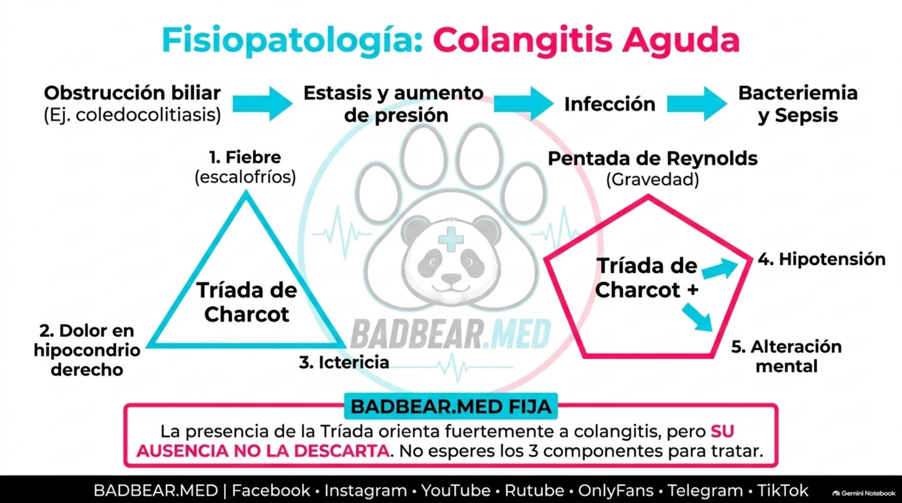
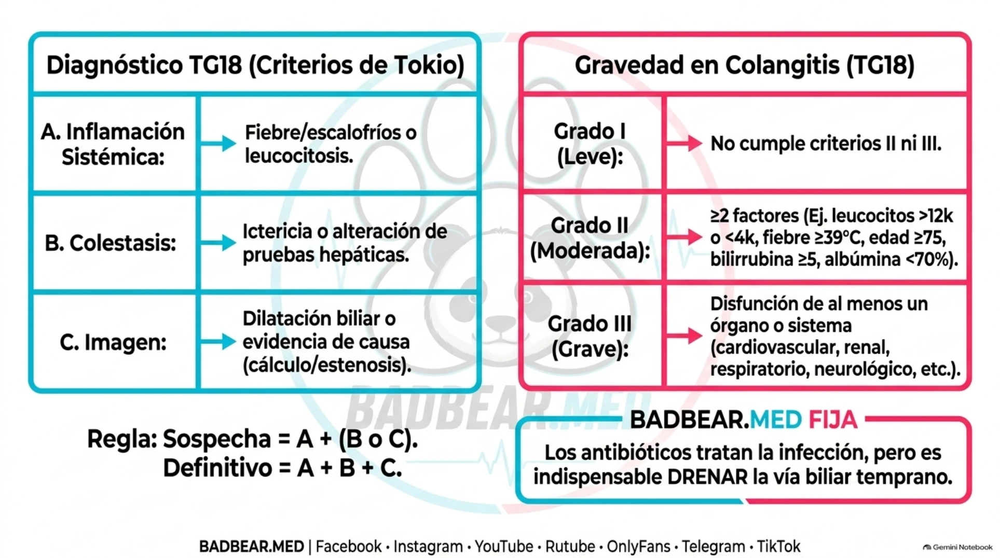
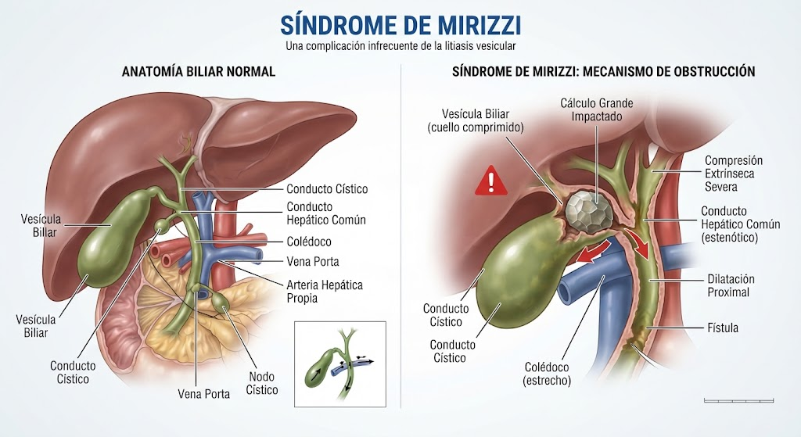
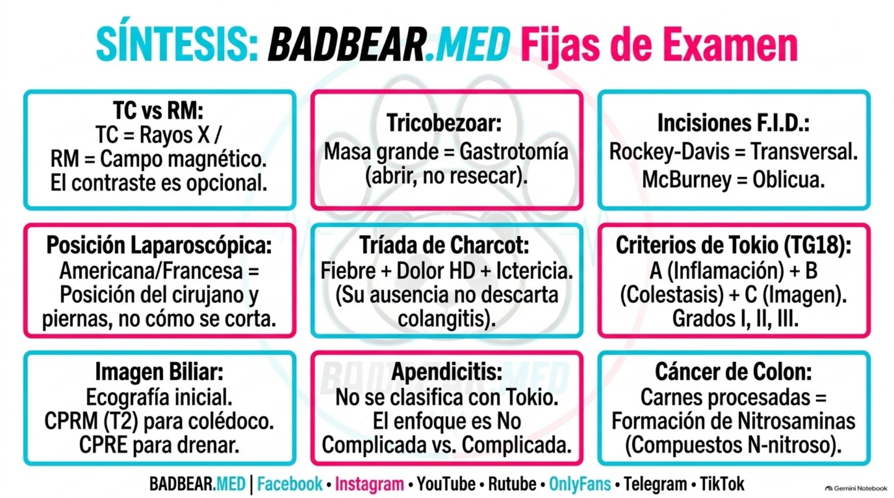

Colangitis y colecistitis: grados de Tokio y síndrome de Mirizzi
Diagnóstico y grados I–III de colangitis y colecistitis: umbrales, ejemplos clínicos, control del foco y Mirizzi.
Anatomía y diferencia entre infección vesicular y ductal
Los conductos hepáticos derecho e izquierdo se unen para formar el hepático común. El cístico comunica la vesícula con la vía biliar; después de su unión con el hepático común, la continuación se denomina colédoco. Este desemboca en el duodeno. Obstruir el cístico afecta principalmente el drenaje vesicular; obstruir la vía principal afecta la salida de bilis del hígado.
La colecistitis es inflamación vesicular, habitualmente por un cálculo en el cístico. La colangitis es infección de conductos biliares, generalmente favorecida por obstrucción. Coledocolitiasis es un cálculo dentro del colédoco; Mirizzi es una obstrucción por un cálculo en cuello vesicular o cístico que comprime desde fuera. Son conceptos distintos que pueden coexistir.
Colestasis: definición y comparación de marcadores
Colestasis es disminución o interrupción de la formación o del flujo de bilis. Puede ser intrahepática (alteración hepatocitaria o de conductos pequeños, por ejemplo fármacos, sepsis o enfermedades colangiopáticas) o extrahepática (obstrucción por cálculo, Mirizzi, estenosis o tumor). No es sinónimo de colangitis: una es alteración del flujo y la otra infección.
La retención de componentes biliares favorece elevación de enzimas colestáticas y puede producir hiperbilirrubinemia conjugada. La bilirrubina conjugada hidrosoluble aparece en orina y causa coluria; la disminución de pigmentos intestinales puede causar hipocolia/acolia. El prurito tiene mecanismos complejos y no se explica solamente por bilirrubina. La colestasis prolongada puede reducir absorción de grasas y vitaminas A, D, E y K.
| Marcador | Utilidad | Límite |
|---|---|---|
| Fosfatasa alcalina (FA/ALP) | Principal enzima para definir patrón colestático: elevación desproporcionada respecto a AST/ALT. | También proviene de hueso y placenta. No toda elevación es hepatobiliar. |
| GGT | Apoya origen hepatobiliar de una FA elevada; sensible. | Puede elevarse por alcohol, fármacos y otras enfermedades hepáticas. Aislada no demuestra obstrucción. |
| 5′-nucleotidasa | Alternativa para apoyar origen hepatobiliar de FA; no aumenta por enfermedad ósea. | Menor disponibilidad; no localiza ni determina causa. |
| Bilirrubina total y directa | Evalúan alteración excretora e ictericia; directa elevada apoya retención de bilirrubina conjugada. | Puede ser normal en colestasis temprana o parcial y elevarse sin obstrucción mecánica. |
| AST/TGO y ALT/TGP | Principalmente lesión hepatocelular; ayudan a reconocer patrón mixto. | Pueden elevarse intensamente en obstrucción aguda por cálculo. No son marcadores principales de colestasis. |
| INR y albúmina | Evalúan dimensiones de función sintética y contexto clínico. | INR también cambia por anticoagulantes o déficit de vitamina K; albúmina por inflamación, nutrición y pérdidas. |
¿Cuál es mejor? Para definir patrón colestático, FA; para apoyar que la FA procede del sistema hepatobiliar, GGT o 5′-nucleotidasa; para evaluar acumulación de bilirrubina e ictericia, fracciones de bilirrubina; para localizar la obstrucción, imagen. La combinación FA + GGT + bilirrubina total/directa, junto a AST/ALT y contexto, es más útil que una prueba aislada.
Ejemplo: FA 600 U/L con límite 120 equivale a 5 veces el límite. ALT 80 con límite 40 equivale a 2 veces: predomina elevación de FA. Comparar valores brutos de enzimas sin normalizarlos por sus límites de referencia conduce a errores. FA elevada con GGT normal obliga a considerar fuente ósea u otra causa; GGT aislada elevada no diagnostica una piedra.
La FA puede elevarse con retraso y permanecer elevada después de resolver una obstrucción. Una bilirrubina normal no excluye colestasis y una bilirrubina alta no define por sí sola su causa. Para diagnosticar colangitis se añaden evidencia de inflamación e imagen; para gravedad TG18, bilirrubina ≥5 mg/dL es un factor de grado II, mientras INR >1,5 corresponde al criterio hepático de grado III.
Lecturas: AASLD: evaluación de enzimas elevadas; AASLD: cinética de bilirrubina y FA; ACG: Evaluation of Abnormal Liver Chemistries.
Qué es Tokio y para qué sirve
Las Tokyo Guidelines son recomendaciones internacionales de consenso para diagnóstico, gravedad y tratamiento de colangitis y colecistitis. TG07, TG13 y TG18 designan las ediciones de 2007, 2013 y 2018. Su nombre se vincula al consenso iniciado en Japón; no es una enfermedad ni un examen de laboratorio.
Responden tres preguntas: ¿existe infección biliar?, ¿qué gravedad tiene?, ¿qué soporte y control del foco necesita? Aquí se explican criterios TG18. Los grados de infección y la anatomía obstructiva se evalúan por separado: un Mirizzi tipo I puede acompañarse de colangitis grave si hay disfunción orgánica. [1,2]
Diagnosticar y graduar son dos pasos diferentes
Primero se identifica si el foco está en la vesícula (colecistitis), en los conductos (colangitis) o si existe un cálculo sin infección (coledocolitiasis). Después se asigna gravedad a cada infección. Una persona puede tener colecistitis y colangitis simultáneamente, con grados distintos. La coledocolitiasis aislada no recibe grados I–III de Tokio: su probabilidad se evalúa con ASGE/ESGE.
En la valoración inicial se busca primero disfunción orgánica: si existe, corresponde grado III. Si no existe, se revisan los criterios específicos de grado II de la enfermedad. Si tampoco se cumplen, es grado I. La clasificación se reevalúa durante la evolución; no hay que esperar que un paciente atraviese I y II para reconocer un III.
Fisiopatología de colangitis y tríada de Charcot
La obstrucción causa estasis y aumento de presión intraductal. La infección y la pérdida de mecanismos defensivos favorecen proliferación bacteriana. La presión elevada puede facilitar reflujo colangiovenoso y colangiolinfático, con paso de bacterias y sus productos a circulación. Aparecen bacteriemia y sepsis; la vasodilatación, alteración microcirculatoria y respuesta inflamatoria pueden comprometer órganos.
| Charcot | Explicación |
|---|---|
| Dolor en hipocondrio derecho | Distensión e inflamación biliar. |
| Fiebre/escalofríos | Respuesta a infección; puede existir bacteriemia. |
| Ictericia | Dificultad para excretar bilirrubina por obstrucción. |
La tríada completa no aparece en todos los pacientes. Su ausencia no descarta la enfermedad; ancianos pueden presentar deterioro o confusión. La pentada de Reynolds añade hipotensión y alteración de conciencia: es una presentación clásica grave, no un requisito para grado III. [1]

Por qué la presión favorece deterioro sistémico
La bilis retenida y la infección aumentan la carga bacteriana local. La presión facilita paso de bacterias y productos a circulación; la respuesta sistémica puede alterar perfusión y función de órganos. Esto conecta la imagen de un conducto obstruido con hipotensión, confusión u oliguria. La fiebre es respuesta inflamatoria; la ictericia es alteración de excreción: representan dimensiones distintas.
Diagnóstico TG18: A, B y C
| Grupo | Manifestaciones y umbrales |
|---|---|
| A: inflamación sistémica | Fiebre/escalofríos; temperatura >38 °C, leucocitos <4000 o >10 000/µL o PCR ≥1 mg/dL. |
| B: colestasis | Ictericia con bilirrubina total ≥2 mg/dL o ALP, GGT, AST o ALT >1,5 veces límite superior normal. |
| C: imagen | Dilatación biliar o evidencia de causa: cálculo, estenosis, prótesis u otra obstrucción. |
Sospecha: un criterio A más uno B o C. Definitivo: al menos un criterio de cada grupo, A+B+C. No se exige que la imagen muestre al mismo tiempo cálculo y dilatación. Las alteraciones de laboratorio se interpretan junto a antecedentes y diagnósticos alternativos. Los umbrales diagnósticos de leucocitos y bilirrubina no son los mismos que los de gravedad moderada. [1]
Grado I y grado II: leve y moderada
El grado I no cumple criterios de II ni III. Se trata y reevalúa: no significa ausencia de riesgo ni que nunca necesite intervención.
El grado II exige al menos dos de los siguientes cinco factores:
| Factor | Umbral |
|---|---|
| Leucocitos | >12 000 o <4000/µL. |
| Temperatura | ≥39 °C. |
| Edad | ≥75 años. |
| Bilirrubina total | ≥5 mg/dL. |
| Albúmina | <0,7 × límite inferior normal del laboratorio. |
Ejemplo: edad de 78 años y bilirrubina de 6 mg/dL permiten clasificar grado II aunque no exista shock. Si el límite inferior de albúmina es 3,5 g/dL, el umbral resulta 2,45 g/dL; se utiliza el valor del laboratorio, no una cifra inventada para todo centro. Estos factores identifican pacientes de mayor riesgo y respaldan drenaje temprano. [1]
Colangitis grado I: cómo reconocerla en el paciente
El paciente cumple criterios de colangitis, conserva la función orgánica y presenta cero o un factor de grado II. Puede tener fiebre, dolor e ictericia; estos síntomas ayudan al diagnóstico, pero no bastan para llamarla moderada. Leve describe su situación actual, no permite ignorar una obstrucción persistente.
Caso de práctica: paciente de 45 años, fiebre de 38,4 °C, leucocitos 11 000/µL, bilirrubina total 3 mg/dL y cálculo en colédoco en imagen. Está lúcido, normotenso, sin necesidad de vasopresores, con diuresis y función renal conservadas, oxigenación adecuada, INR 1,1, plaquetas 180 000/µL y albúmina normal. Hay inflamación, colestasis e imagen causal: colangitis definitiva. No cumple II ni III: grado I.
Colangitis grado II: contar los criterios, no la intensidad del dolor
Se necesitan dos o más factores de la tabla y ausencia de disfunción orgánica. Edad, temperatura, hemograma, bilirrubina y albúmina se verifican por separado. Una ictericia muy visible no reemplaza la cifra de bilirrubina; una fiebre referida sin medición no demuestra ≥39 °C.
Caso de práctica: paciente de 60 años con colangitis confirmada, temperatura 39,2 °C y leucocitos 14 500/µL, con función orgánica conservada. Cumple dos factores: fiebre y leucocitosis. Es grado II, aunque la bilirrubina sea 3 mg/dL. En cambio, 14 500 leucocitos como único factor moderado no bastan para II.
Grado III: disfunción orgánica
| Sistema | Criterio |
|---|---|
| Cardiovascular | Hipotensión que requiere dopamina ≥5 µg/kg/min o cualquier dosis de noradrenalina. |
| Neurológico | Alteración del estado de conciencia. |
| Respiratorio | PaO₂/FiO₂ <300. |
| Renal | Oliguria o creatinina >2 mg/dL. |
| Hepático | INR >1,5. |
| Hematológico | Plaquetas <100 000/µL. |
Una sola disfunción basta. La bilirrubina elevada refleja colestasis, pero el criterio hepático de grado III es INR; no son equivalentes. Se valoran condiciones basales y causas concomitantes. El deterioro implica soporte de órganos y descompresión lo antes posible tras estabilización inicial. [1,2]

Ejercicios de interpretación
Paciente de 78 años y bilirrubina de 6 mg/dL: reúne dos factores de grado II aunque esté normotenso. Paciente de 50 años con colangitis y oliguria: puede ser grado III por disfunción renal, sin cumplir dos factores moderados. El número de cálculos no define el grado; lo define la respuesta clínica y orgánica. Tampoco se transforma automáticamente una colestasis sin infección en colangitis.
Cómo buscar cada disfunción junto a la cama
Los seis sistemas y umbrales de la tabla se aplican tanto a colangitis como a colecistitis. El dato debe interpretarse con el contexto y los valores basales: enfermedad renal crónica, anticoagulación o trombocitopenia previa pueden alterar resultados y requieren juicio clínico.
| Sistema | Qué buscar o solicitar | Cómo evitar una confusión |
|---|---|---|
| Cardiovascular | Presión arterial, perfusión y registro del vasopresor y su dosis. | Una presión baja exige actuar, pero el criterio formal TG18 utiliza hipotensión con el soporte vasoactivo especificado. La dopamina citada es un umbral de clasificación, no una recomendación de elegirla. |
| Neurológico | Confusión nueva, desorientación o disminución de conciencia; comparar con estado habitual. | No es necesario coma. Buscar hipoglucemia, sedación y otras causas. |
| Respiratorio | Gasometría arterial y FiO₂ al tomar la muestra. | La saturación del pulsioxímetro no es PaO₂. Con PaO₂ 75 mmHg y FiO₂ 0,40, la relación es 187,5: menor de 300. |
| Renal | Diuresis medida, balance, creatinina y valor previo. | No basta «orina poco». Cuantificar y evaluar perfusión u obstrucción urinaria. Oliguria clínicamente significativa puede cumplir el criterio aun sin creatinina >2. |
| Hepático | Tiempo de protrombina/INR y antecedentes de hepatopatía o anticoagulantes. | Es INR >1,5, no una cifra de transaminasas ni de bilirrubina. |
| Hematológico | Recuento plaquetario y tendencia. | Es plaquetas <100 000/µL; la leucocitosis no sustituye este criterio. |
Colangitis grado III: ejemplo y defensa oral
Paciente de 42 años con colangitis, leucocitos 11 500/µL y bilirrubina 3 mg/dL, que desarrolla hipotensión y necesita noradrenalina. Es grado III por disfunción cardiovascular, aunque no reúna dos factores de II. No se espera la pentada de Reynolds completa ni el fallo de varios órganos.
Respuesta al docente: «Tiene colangitis grado III porque requiere noradrenalina por hipotensión. Una disfunción orgánica basta; los criterios moderados no son un requisito previo». Se inicia soporte y se coordina el control del foco sin esperar a completar todas las pruebas.
Tratamiento y control del foco
El manejo inicial comprende valoración hemodinámica, fluidos individualizados, antibióticos oportunos, analítica y cultivos cuando sea factible sin retrasar tratamiento, además de soporte según necesidad. La cobertura se adapta a gravedad, origen comunitario o sanitario, instrumentación previa, alergias, función renal y resistencia local. No existe un esquema idéntico para todos.
La leve puede responder al tratamiento inicial; si no mejora o la causa lo requiere, se drena. La moderada requiere drenaje temprano. En la grave se inicia reanimación y soporte, y se drena cuanto antes después de estabilización inicial. La CPRE suele permitir descompresión mediante prótesis o drenaje nasobiliar y extracción si el estado y la dificultad lo permiten.
Una sesión prolongada para fragmentar todos los cálculos puede ser inapropiada en un paciente inestable. Drenar primero y completar extracción posteriormente es una estrategia válida. Si CPRE no es viable, se evalúan rutas percutáneas, guiadas por ecoendoscopia o quirúrgicas según equipo y anatomía. [2,3]
Colecistitis: diagnóstico y cada grado de Tokio
La colecistitis afecta la vesícula; su dolor localizado, la respuesta inflamatoria y los hallazgos de imagen deben concordar. Un cálculo vesicular aislado no demuestra colecistitis aguda. [4]
Primero: establecer el diagnóstico A+B+C
| Grupo | Qué observar en el paciente |
|---|---|
| A: signos locales | Murphy o masa, dolor o sensibilidad en hipocondrio derecho. Murphy clínico: la palpación subcostal derecha durante inspiración desencadena dolor y detención inspiratoria. |
| B: inflamación sistémica | Fiebre, PCR elevada o leucocitos elevados. Para el diagnóstico no se exige leucocitos >18 000: ese umbral pertenece a gravedad II. |
| C: imagen característica | Ecografía con hallazgos compatibles: engrosamiento e inflamación de pared, distensión, líquido perivesicular o Murphy ecográfico, interpretados en conjunto. El engrosamiento aislado puede tener otras causas. |
Sospecha: al menos un A y un B. Diagnóstico definitivo: A+B e imagen compatible C. Excluir otras causas de dolor/inflamación y distinguir enfermedad crónica. La ecografía suele ser el estudio inicial; otras imágenes resuelven incertidumbre o complicaciones.
Grado I: leve
Hay colecistitis aguda sin disfunción orgánica y sin ninguno de los criterios de II. Puede existir fiebre y leucocitosis, pero no se alcanzan los criterios moderados. Dolor intenso o Murphy positivo no convierten por sí solos el caso en II.
Ejemplo: mujer de 35 años con dolor de 24 horas, Murphy positivo, leucocitos 14 000/µL, PCR elevada y ecografía compatible, sin masa palpable, gangrena, absceso ni otras complicaciones locales marcadas. Está estable y todos los sistemas orgánicos están conservados: colecistitis grado I.
Grado II: moderada
Sin criterios de III, basta uno de los siguientes cuatro criterios. Esta categoría identifica inflamación local más importante y una operación potencialmente más difícil; no requiere shock. [4]
| Criterio | Cómo comprobarlo |
|---|---|
| Leucocitos >18 000/µL | Hemograma: 19 000 cumple; exactamente 18 000 no cumple este umbral. |
| Masa dolorosa palpable en hipocondrio derecho | Hallazgo de exploración; no confundir con dolor sin masa ni con vesícula distendida solo en ecografía. |
| Duración de síntomas >72 horas | Precisar inicio del episodio actual: 96 horas cumple; exactamente 72 horas no cumple este criterio. |
| Inflamación local marcada | Colecistitis gangrenosa, enfisematosa, absceso pericolecístico o hepático, o peritonitis biliar. Identificar con imagen y/o hallazgos operatorios. No equivale a cualquier mínimo líquido perivesicular. |
Ejemplo por laboratorio: el caso anterior con 20 000 leucocitos/µL es II aun si comenzó hace 24 horas. Ejemplo por tiempo: paciente con diagnóstico confirmado, 96 horas de síntomas y leucocitos 13 000/µL, sin fallo orgánico: II por duración. Ejemplo por anatomía: gangrena vesicular sin disfunción orgánica: II por inflamación local marcada. No necesita tener simultáneamente los cuatro criterios.
Grado III: grave
La colecistitis se acompaña de al menos una disfunción orgánica de la tabla de los seis sistemas: cardiovascular, neurológica, respiratoria, renal, hepática o hematológica, con los mismos umbrales usados para colangitis. La disfunción determina III aunque también existan criterios locales de II.
Ejemplo: paciente con colecistitis confirmada, sin gangrena en la imagen, que presenta nueva disfunción renal con creatinina 2,6 mg/dL. Es III por disfunción renal. Otro paciente con gangrena y necesidad de noradrenalina es III, no solamente II. Un absceso por sí solo, con función orgánica conservada, sigue siendo II.
Qué cambia en el manejo
El grado se integra con comorbilidades, riesgo anestésico, anatomía y experiencia del centro. Se considera colecistectomía temprana en pacientes apropiados; cuando el riesgo impide cirugía segura se valora drenaje vesicular. III requiere soporte y una estrategia individual de control del foco, no significa automáticamente «nunca operar». La CPRE actúa en la vía biliar principal; no sustituye automáticamente el drenaje de una vesícula con el cístico obstruido. [2,4]

Aplicación en la visita: cómo justificar el grado
- Identificar el foco: explicar qué datos apoyan colecistitis, colangitis o ambas, y qué imagen los confirma.
- Buscar III primero: revisar conciencia, soporte circulatorio, oxigenación, diuresis/creatinina, INR y plaquetas. Una disfunción basta.
- Si no hay III, contar los criterios de II: dos de cinco en colangitis; uno de cuatro en colecistitis.
- Si no alcanza II y no hay III: grado I. Un dato no medido no debe asumirse normal; completar evaluación y reevaluar evolución.
- Comunicar el fundamento: nombrar enfermedad, grado y dato concreto; luego proponer prioridad de tratamiento y control del foco.
| Pregunta del doctor | Colangitis | Colecistitis |
|---|---|---|
| ¿Qué hace grado I? | No cumple II ni III. | No cumple II ni III. |
| ¿Cuántos criterios hacen II? | Al menos dos factores entre leucocitos, temperatura, edad, bilirrubina y albúmina. | Uno entre leucocitos >18 000, masa dolorosa, síntomas >72 h o inflamación local marcada. |
| ¿Qué hace III? | Una disfunción orgánica. Tiene prioridad sobre los criterios moderados. | |
| ¿Edad ≥75 basta para II? | No: es un factor; falta otro. | No es un criterio formal de II, aunque influye en riesgo general. |
| ¿Bilirrubina elevada hace III? | No por sí sola. El criterio hepático de III es INR >1,5. | |
| ¿Gangrena hace III? | No es uno de sus criterios específicos. | Hace II por inflamación local marcada; III si se agrega disfunción orgánica. |
Casos breves para responder en voz alta
1. Colangitis confirmada en paciente de 80 años, sin otros factores moderados y con órganos conservados: grado I; la edad aporta solo un criterio de II. No equivale a bajo riesgo anestésico ni permite omitir vigilancia.
2. Colangitis con bilirrubina 6 mg/dL y leucocitos 13 000/µL, sin disfunción: II por dos factores. Si desarrolla confusión aguda atribuible al cuadro, pasa a III por disfunción neurológica.
3. Colecistitis con 80 horas de evolución y sin disfunción: II por tiempo, aunque el hemograma tenga 12 000 leucocitos/µL.
4. Colecistitis con plaquetas 85 000/µL de nueva aparición en el episodio: III por disfunción hematológica, aun con 20 horas de dolor. Verificar antecedentes y causas alternativas.
5. Cálculo en colédoco con colestasis, sin evidencia de infección: coledocolitiasis; no asignar Tokio I por el solo hecho de tener un cálculo. Investigar si cumple criterios de colangitis.
Fuentes de este desarrollo: TG18 de colangitis, TG18 de colecistitis y manejo inicial de infección biliar. Los casos son ejercicios docentes de aplicación de los criterios.
Mirizzi: ubicación del cálculo y mecanismo
El síndrome de Mirizzi es obstrucción de la vía biliar principal por un cálculo impactado en cuello vesicular, bolsa de Hartmann o cístico, que comprime clásicamente el hepático común desde fuera. Hartmann es una bolsa o dilatación del infundíbulo donde puede impactarse material. El cístico y el cuello están próximos al hepático común; variantes con trayecto paralelo favorecen la relación.
Impactación → presión local e inflamación → compresión extrínseca → colestasis y dilatación proximal. El cálculo no necesita haber entrado al colédoco. Presión e inflamación sostenidas pueden erosionar paredes contiguas y formar una fístula colecistobiliar. El proceso puede acompañarse de colecistitis o colangitis; no todos los casos forman fístula. [5]

Clasificación de Csendes y extensión
| Tipo | Alteración anatómica |
|---|---|
| I | Compresión externa sin fístula colecistobiliar. |
| II | Fístula con erosión de hasta aproximadamente un tercio de circunferencia del conducto. |
| III | Defecto más extenso, hasta dos tercios. |
| IV | Destrucción completa de pared del segmento afectado. |
| V, ampliación | Cualquiera de los anteriores más fístula colecistoentérica; Va sin íleo biliar y Vb con íleo biliar. |
El íleo biliar es obstrucción intestinal mecánica por un cálculo que alcanzó el intestino a través de una fístula. La clasificación anatómica ayuda a prever reparación, aunque la extensión exacta de destrucción a menudo se determina durante la operación. No se suman estos tipos a los grados de Tokio: describen fenómenos diferentes. [5,6]
Diagnóstico de Mirizzi y riesgo quirúrgico
Ecografía puede mostrar cálculo impactado, inflamación y dilatación proximal. CPRM representa nivel de estrechamiento y relación de conductos; TC ayuda a evaluar complicaciones y masas. CPRE permite delinear obstrucción y drenar cuando existe ictericia o colangitis que lo requiere. No toda ictericia con vesícula litiásica es Mirizzi: se investigan coledocolitiasis, estenosis y neoplasias.
La inflamación y adherencias distorsionan el triángulo hepatocístico. La vía principal puede quedar pegada a la vesícula y confundirse con el cístico. Cortar o ligar una estructura mal identificada causa lesión biliar. Reconocer el síndrome permite anticipar cirugía difícil y posible necesidad de apoyo hepatobiliar. No se diseca a ciegas para completar una colecistectomía total.
Tratamiento de Mirizzi
En tipo I se retira el cálculo y se trata la vesícula mediante colecistectomía, completa o subtotal según seguridad anatómica. En tipos con fístula se valora reparación o reconstrucción según extensión, calidad tisular y calibre. Destrucción extensa suele requerir hepaticoyeyunostomía en Y de Roux: anastomosis entre vía hepática y un asa de yeyuno para restablecer drenaje.
La CPRE puede descomprimir y servir como puente, pero no necesariamente elimina un cálculo impactado fuera del colédoco. Las opciones avanzadas se individualizan. Si hay colangitis, el control inicial de infección y obstrucción puede preceder a cirugía definitiva. El abordaje laparoscópico o abierto depende de hallazgos y experiencia; la seguridad prevalece sobre terminar por una vía predeterminada. [6]
Repaso final y bibliografía
- Revisar selección de imagen y instrumentos de extracción y drenaje.
- Preguntar siempre: ¿qué está obstruido?, ¿hay infección?, ¿hay disfunción orgánica?, ¿qué intervención controla el foco?
- Kiriyama et al. TG18: colangitis, diagnóstico y gravedad.
- Miura et al. TG18: manejo inicial.
- ASGE. Coledocolitiasis, 2019.
- Yokoe et al. TG18: colecistitis.
- Csendes et al. Mirizzi syndrome and cholecystobiliary fistula, 1989.
- Evidence-based clinical practice guidelines for cholelithiasis 2021.

Integración con Mirizzi: si el cálculo está en cuello o cístico y comprime el hepático común, esa es la causa anatómica de colestasis. Si aparece infección se aplica Tokio; si hay además disfunción orgánica, es grave aunque la lesión de Mirizzi sea solamente tipo I. La ilustración de Mirizzi aportada por separado se acompaña de aclaraciones anatómicas; el acceso de Hasson se desarrolla en el capítulo de apendicitis y laparoscopia.
Material visual y audio de la rotación
Abrir el repaso ilustrado completo · 14 páginas · Escuchar el audio de tricobezoares e imagen abdominal.